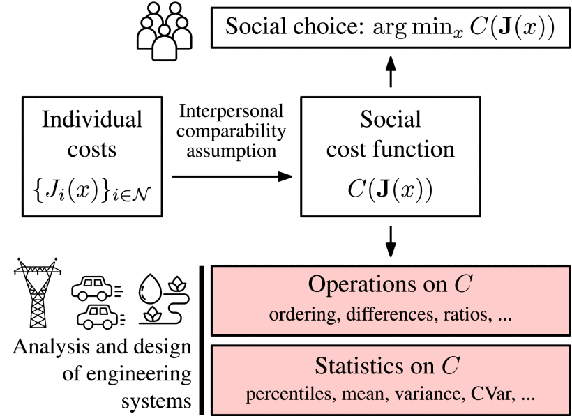
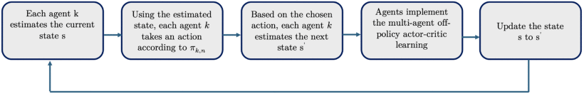
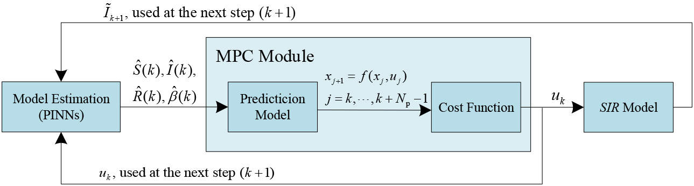
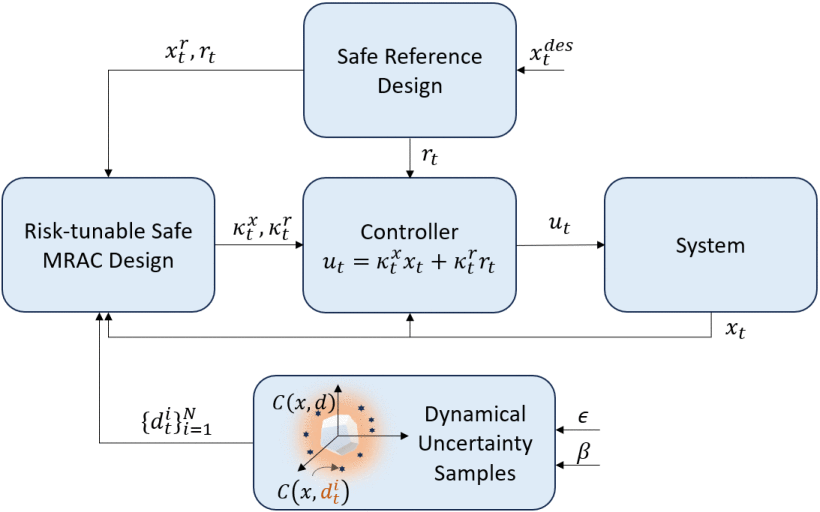

Browse the latest articles on IEEE Xplore
Q1 2026
By Ilia Shilov, Ezzat Elokda, Sophie Hall, Heinrich H. Nax, and Saverio Bolognani
Many multi-agent socio-technical systems rely on aggregating heterogeneous agents’ costs into a social cost function (SCF) to coordinate resource allocation in domains such as energy grids, water allocation, or traffic management. In this paper, the authors demonstrate that what determines which SCF ought to be used is the degree to which individual costs can be compared across agents and which axioms the aggregation shall fulfill.

In the diagram, x represents a social decision that affects all agents. Each agent incurs an individual cost Ji(x). In a welfarist approach, the social decision maker chooses x so that a social cost function C (an aggregation of the individual costs) is minimized. The cost function C is also used for other purposes, such as quantitative comparisons and statistical analysis.
Multi-Agent Off-Policy Actor-Critic Reinforcement Learning for Partially Observable Environments
By Ainur Zhaikhan and Ali H. Sayed
When multiple agents are deployed across an environment, they may only have access to limited information, observing only specific portions of the overall environment. This study leverages a social learning method to estimate a global state within a multi-agent reinforcement learning framework operating in a partially observable environment.

A block diagram illustrating the primary steps of the proposed algorithm.
Friction-Robust Autonomous Racing Using Trajectory Optimization Over Multiple Models
By Rajan K. Aggarwal and J. Christian Gerdes
Autonomous vehicle control in low-friction environments should be capable of using all the traction at the road to accomplish maneuvering objectives, but in these environments the limit of traction is difficult to estimate, which challenges standard motion planning techniques. In this paper, the authors introduce a multiple-model trajectory optimization framework that inherently incorporates the nonlinear effects of friction uncertainty into the planning process to improve both the performance and robustness of maneuvering at high accelerations.
The automated test platform that helped validate the multi-model trajectory optimization method, shown here in the winter testing environment studied in this paper.
A Physics-Informed Neural Networks-Based Model Predictive Control Framework for SIR Epidemics
By Aiping Zhong, Baike She, and Philip E. Paré
This work introduces a physics-informed neural networks (PINN)-based model predictive control (MPC) framework for the joint real-time estimation of states and parameters and control of susceptible-infected-recovered (SIR) spreading models using only noisy infected states. Comparative experiments against an extended Kalman filter, ideal MPC, and different neural network structures, together with validation on real COVID-19 data, demonstrate the effectiveness of the proposed methods under different settings.

Schematic of the physics-informed neural networks-based MPC closed-loop framework showing the interaction between the PINNs, MPC, and SIR model for real-time estimation and control.
Risk-Tunable Safe Adaptive Control for Nonlinear Systems Under Dynamical Uncertainties
By Vipul K. Sharma and S. Sivaranjani
This paper addresses the problem of safe adaptive control for nonlinear systems with dynamical uncertainties, while satisfying probabilistic control barrier function (CBF)-based safety constraints. Specifically, the authors provide a risk-tunable sampling-based scenario design approach to tune parameterized controllers such that the true system tracks a reference model, while guaranteeing safety up to a tunable user-defined risk.

Schematic of risk-tunable safe adaptive control framework.
Additional recently published papers:
Quick Updates for the Perturbed Static Output Feedback Control Problem in Linear Systems With Applications to Power Systems
By MirSaleh Bahavarnia and Ahmad F. Taha
Policy Optimization in Multi-Agent Settings Under Partially Observable Environments
By Ainur Zhaikhan, Malek Khammassi, and Ali H. Sayed
Geometry-Aware Edge-State Tracking for Robust Affine Formation Control
By Zhonggang Li and Raj Thilak Rajan
Lyapunov-Based Nonlinear Model Predictive Control of Input-Delayed Functional Electrical Stimulation: Investigative Simulations and Experiments
By Krysten Lambeth, Ziyue Sun, Ashwin Iyer, Vidisha Ganesh, and Nitin Sharma
On the Equivalence of Sensory and Incremental Nonlinear Dynamic Inversion
By S. Hafner, T. De Ponti, and E. Smeur
Latest News
Special sessions for journal publications at CDC 2026
Papers accepted by OJ-CSYS between June 1, 2025 and May 31, 2026 are eligible to be presented in a limited number of sessions at the 65th Conference on Decision and Control in Honolulu, Hawaii.
Submissions will be accepted through June 10, 2026. You will need to submit title, authors, up to 2-page extended abstract, the accepted manuscript, and the letter of acceptance.
For more information, visit https://cdc2026.ieeecss.org/special-sessions-for-journal-publications.
APC discounts available
A number of 50% discounts on article processing charges are still available for papers published in Vol. 5. In order to get the discount, papers must be submitted by mid-June 2026 (20 weeks prior to the close of the volume). Contact the Editorial Assistant for more information.
There's still time to submit!
Our Special Section on Intersection of Machine Learning with Control closes May 15, 2026.
Topics of interest include but are not limited to:
- Machine learning for dimensionality reduction and system identification
- Emerging theory and applications for learning-based control
- Data-driven optimization and control for dynamical systems
- Safe reinforcement learning and safe adaptive control
- Bridging model-based and learning-based control systems
- Distributed learning over distributed systems
- Reinforcement learning for multiagent systems
- Optimization, dynamics and control for machine learning
- Reinforcement learning and statistical learning for dynamical and control systems
Submit here: https://css.paperplaza.net/journals/ojcs/scripts/login.pl
Follow us!
Follow OJ-CSYS on LinkedIn, Facebook and X for the latest articles, updates and news.